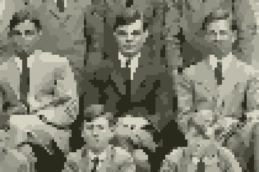
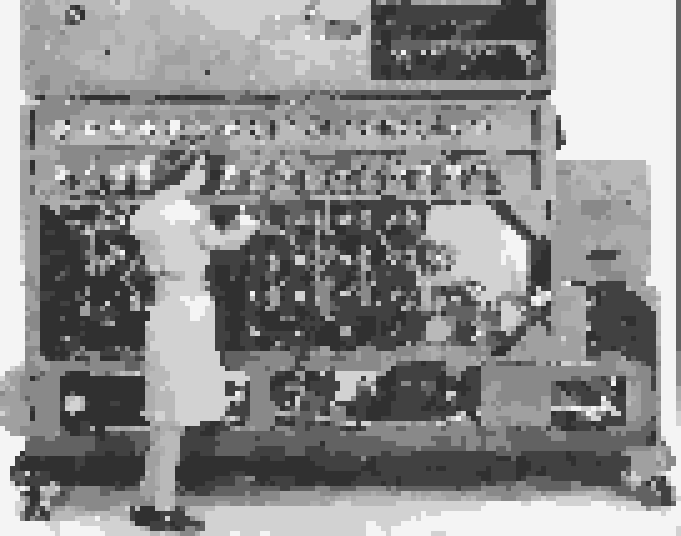
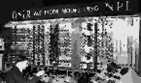

Alan Turing
Par la suite, Turing est devenu chercheur à King's College, et sa thèse portait sur le théorème central limite en mathématiques. Ses recherches se sont étendues à divers domaines des mathématiques, en plus de la théorie des probabilités.

est né le 23 juin 1912 dans une famille traditionnelle
de la haute société britannique. Boursier de King's College à
l'Université de Cambridge, il a obtenu son diplôme en mathématiques
avec d'excellentes notes en 1934.
Alan Turing à la Sherborne School, Angleterre, 1930
Par la suite, Turing est devenu chercheur à King's College, et sa thèse portait sur le théorème central limite en mathématiques. Ses recherches se sont étendues à divers domaines des mathématiques, en plus de la théorie des probabilités.
En 1935, Turing a suivi un cours de "logique mathématique" donné par Newman à Cambridge. Ce cours traitait de la démonstration de l'incomplétude des axiomes mathématiques de Hilbert par Gödel. En suivant ce cours, Turing s'est profondément plongé dans le défi posé par Hilbert, ce qui a abouti à la publication de son article "On Computable Numbers, with an Application to the Entscheidungsproblem" en 1936.
Dans cet article, Turing a introduit le concept de "machine abstraite", plus tard appelée machine de Turing, considérée comme l'une des pierres angulaires de l'informatique. L'article mettait l'accent sur la définition claire de ce qu'est une "méthode précise" pour résoudre des problèmes mathématiques, et Turing a présenté une approche novatrice pour résoudre le problème de décidabilité.
La recherche de Turing a révolutionné le domaine de l'informatique, et la machine de Turing est utilisée comme modèle théorique de calcul. Ses contributions ont eu un impact significatif non seulement dans le domaine de l'informatique, mais aussi dans les domaines des mathématiques et de l'intelligence artificielle.
Turing a développé le concept de la machine de Turing , une machine capable de lire et d'écrire des symboles sur une bande de papier. Ce concept inclut la lecture de la bande de papier, une machine avec diverses configurations internes, et une table décrivant un comportement spécifique. La machine de Turing a eu des implications étendues dans des domaines variés tels que les mathématiques, l'informatique, la technologie, la physique quantique et la psychologie.
, une machine capable de lire et d'écrire des symboles sur une bande de papier. Ce concept inclut la lecture de la bande de papier, une machine avec diverses configurations internes, et une table décrivant un comportement spécifique. La machine de Turing a eu des implications étendues dans des domaines variés tels que les mathématiques, l'informatique, la technologie, la physique quantique et la psychologie.
À travers la machine de Turing, Turing a formalisé le concept de méthodes claires et a introduit l'idée de machines avec des actions limitées. Il a présenté deux modèles généraux de méthodes claires à travers des discussions non mathématiques dans ses recherches. L'un était axé sur les personnes suivant des procédures, décrivant comment une tâche pouvait être poursuivie même si une autre personne prenait le relais.
Turing a mis l'accent sur la calculabilité en relation avec les tâches de calcul humain, en se concentrant sur les "nombres calculables". Son concept de machine "universelle" a montré que toute machine pouvait être traitée comme une machine de Turing si elle pouvait imiter une machine de Turing.
Dans cet article, Turing a introduit le concept de "machine abstraite", plus tard appelée machine de Turing, considérée comme l'une des pierres angulaires de l'informatique. L'article mettait l'accent sur la définition claire de ce qu'est une "méthode précise" pour résoudre des problèmes mathématiques, et Turing a présenté une approche novatrice pour résoudre le problème de décidabilité.
La recherche de Turing a révolutionné le domaine de l'informatique, et la machine de Turing est utilisée comme modèle théorique de calcul. Ses contributions ont eu un impact significatif non seulement dans le domaine de l'informatique, mais aussi dans les domaines des mathématiques et de l'intelligence artificielle.
Turing a développé le concept de la machine de Turing
Modèle de machine de Turing, 2012
À travers la machine de Turing, Turing a formalisé le concept de méthodes claires et a introduit l'idée de machines avec des actions limitées. Il a présenté deux modèles généraux de méthodes claires à travers des discussions non mathématiques dans ses recherches. L'un était axé sur les personnes suivant des procédures, décrivant comment une tâche pouvait être poursuivie même si une autre personne prenait le relais.
Turing a mis l'accent sur la calculabilité en relation avec les tâches de calcul humain, en se concentrant sur les "nombres calculables". Son concept de machine "universelle" a montré que toute machine pouvait être traitée comme une machine de Turing si elle pouvait imiter une machine de Turing.
Les réalisations de Turing étaient des découvertes dans les concepts logiques applicables à des domaines en dehors des mathématiques. En tenant compte de la nature essentielle des processus mentaux tout en discutant de la nature des problèmes de calcul pratiques, Turing a proposé des modèles réalisables dans la réalité. Sa définition avait des fondements dans la capacité de modélisation réalisable par l'existence humaine.
Alan Turing a joué un rôle actif dans le domaine des mathématiques formelles entre 1937 et 1938, avec des travaux majeurs présentés au cours de cette période. Sa recherche en "logique des ordinaux" en 1939 explorait les systèmes d'axiomes finis pour trouver des moyens d'éviter l'influence du théorème d'incomplétude de Gödel. Il a également effectué des recherches théoriques sur la fonction zêta de Riemann en 1943, offrant une approche novatrice sur ce sujet central de la mathématique classique.
À travers son travail logique, Turing a développé une compréhension approfondie de l'intuition et a cherché à découvrir des étapes non calculatoires liées à la création de systèmes axiomatiques infinis. En particulier, ses recherches sur le problème de la fonction zêta de Riemann l'ont motivé à comprendre les étapes non calculatoires nécessaires à la construction d'une machine à des fins spécifiques.
Alan Turing a joué un rôle actif dans le domaine des mathématiques formelles entre 1937 et 1938, avec des travaux majeurs présentés au cours de cette période. Sa recherche en "logique des ordinaux" en 1939 explorait les systèmes d'axiomes finis pour trouver des moyens d'éviter l'influence du théorème d'incomplétude de Gödel. Il a également effectué des recherches théoriques sur la fonction zêta de Riemann en 1943, offrant une approche novatrice sur ce sujet central de la mathématique classique.
À travers son travail logique, Turing a développé une compréhension approfondie de l'intuition et a cherché à découvrir des étapes non calculatoires liées à la création de systèmes axiomatiques infinis. En particulier, ses recherches sur le problème de la fonction zêta de Riemann l'ont motivé à comprendre les étapes non calculatoires nécessaires à la construction d'une machine à des fins spécifiques.
Pendant la Seconde Guerre mondiale, Alan Turing, déjà remarqué dans le domaine du décryptage,
a joué un rôle de premier plan dans le décryptage des communications radio de la marine allemande.
En 1945, lors de sa nomination au National Physical Laboratory (NPL), Turing a été chargé de concevoir un ordinateur électronique. Sa proposition contenait les principes fondamentaux du logiciel utilisé actuellement, et sa conception novatrice a été reconnue comme la première du genre dans le monde. Tirant parti de son expérience étendue des directives informatiques acquises pendant la guerre, Turing a contribué à faire progresser la compréhension de la puissance universelle d'une machine influençant toute manipulation symbolique, quel que soit le type de machine.
En fin 1945, le rapport de Turing était en avance par rapport à des initiatives similaires aux États-Unis, et il discutait des méthodes pour explorer les capacités des calculateurs électroniques basées sur l'expérience qu'il avait acquise pendant la guerre. Ces discussions ont jeté les bases des concepts modernes de langage et de programmation informatique. Dans son article de 1936, "On Computable Numbers," Alan Turing a décrit en détail la machine de Turing en utilisant des symboles symboliques. Il a réalisé que ces symboles, utilisés par la machine universelle, constitueraient une abréviation des concepts modernes de langage et de programmation informatique. Ces idées sont aujourd'hui parmi les principes fondamentaux de la science informatique.

Au cours de cette période, il a combiné la théorie des probabilités et la créativité logique pour développer des algorithmes novateurs, acquérant une expérience pratique dans leur implémentation machine. Turing a été exposé aux technologies de pointe du début des années 1940 grâce à une utilisation inventive de dispositifs électroniques numériques.
La bombe, utilisée pour aider à déchiffrer la machine allemande Enigma
En 1945, lors de sa nomination au National Physical Laboratory (NPL), Turing a été chargé de concevoir un ordinateur électronique. Sa proposition contenait les principes fondamentaux du logiciel utilisé actuellement, et sa conception novatrice a été reconnue comme la première du genre dans le monde. Tirant parti de son expérience étendue des directives informatiques acquises pendant la guerre, Turing a contribué à faire progresser la compréhension de la puissance universelle d'une machine influençant toute manipulation symbolique, quel que soit le type de machine.
En fin 1945, le rapport de Turing était en avance par rapport à des initiatives similaires aux États-Unis, et il discutait des méthodes pour explorer les capacités des calculateurs électroniques basées sur l'expérience qu'il avait acquise pendant la guerre. Ces discussions ont jeté les bases des concepts modernes de langage et de programmation informatique. Dans son article de 1936, "On Computable Numbers," Alan Turing a décrit en détail la machine de Turing en utilisant des symboles symboliques. Il a réalisé que ces symboles, utilisés par la machine universelle, constitueraient une abréviation des concepts modernes de langage et de programmation informatique. Ces idées sont aujourd'hui parmi les principes fondamentaux de la science informatique.
Son "Non-Computable Instructions" a jeté les bases des principes actuels de développement de programmes et a évolué en programmes pratiques développés par Turing lui-même. Cependant, l'intérêt principal de Turing résidait dans l'exploration de la capacité des ordinateurs à apprendre par eux-mêmes et à acquérir une intelligence. Il a exploré ces sujets à travers des discussions sur le développement des capacités informatiques de manière similaire à l'apprentissage humain. Il est essentiel de consulter les écrits de Turing sur ces sujets.
Dix ans après la publication de "On Computable Numbers" en 1936, Turing a rédigé un article en 1946 soulignant le potentiel et les possibilités prophétiques de la technologie informatique. Bien qu'il ait joué un rôle de premier plan dans la promotion de nouvelles technologies au National Physical Laboratory (NPL)
Bien qu'il se soit retiré du rôle de leader dans le domaine du calcul automatique, Turing croyait que les processus mentaux pouvaient être décrits indépendamment de la mise en œuvre physique et du modèle logique. Il pensait qu'ils pouvaient être implémentés non seulement dans le cerveau physiologique mais aussi dans d'autres formes physiques. Tout au long de ses écrits, Turing a continué à élargir le champ des discussions sur la "pensée" et l'"intelligence", offrant de nouveaux sujets et perspectives.
En 1936, ses discussions étaient axées sur l'exécution de flux de travail. Cependant, entre 1946 et 1948, Turing a considéré jouer aux échecs comme un exemple de référence pour l'intelligence. Il s'est concentré sur le défi de développer un flux de travail pour une machine de jeu d'échecs réussie, où le flux de travail n'était pas explicitement fourni. En 1950, Turing a suggéré que le succès ultime d'une "machine intelligente" se manifesterait par sa capacité à engager des conversations générales avec des personnes. Il a abordé ces questions à travers la discussion sur ce qui constituerait "l'intelligence", cherchant à évaluer les capacités des machines.
Dix ans après la publication de "On Computable Numbers" en 1936, Turing a rédigé un article en 1946 soulignant le potentiel et les possibilités prophétiques de la technologie informatique. Bien qu'il ait joué un rôle de premier plan dans la promotion de nouvelles technologies au National Physical Laboratory (NPL)

,
il a connu des revers en 1948 et a démissionné. Cependant, même après cela, Turing a continué à exercer une influence en proposant des idées dans les domaines de l'informatique et de l'intelligence artificielle.
Le Pilot ACE, l'un des premiers ordinateurs construits au Royaume-Uni, 1950
Bien qu'il se soit retiré du rôle de leader dans le domaine du calcul automatique, Turing croyait que les processus mentaux pouvaient être décrits indépendamment de la mise en œuvre physique et du modèle logique. Il pensait qu'ils pouvaient être implémentés non seulement dans le cerveau physiologique mais aussi dans d'autres formes physiques. Tout au long de ses écrits, Turing a continué à élargir le champ des discussions sur la "pensée" et l'"intelligence", offrant de nouveaux sujets et perspectives.
En 1936, ses discussions étaient axées sur l'exécution de flux de travail. Cependant, entre 1946 et 1948, Turing a considéré jouer aux échecs comme un exemple de référence pour l'intelligence. Il s'est concentré sur le défi de développer un flux de travail pour une machine de jeu d'échecs réussie, où le flux de travail n'était pas explicitement fourni. En 1950, Turing a suggéré que le succès ultime d'une "machine intelligente" se manifesterait par sa capacité à engager des conversations générales avec des personnes. Il a abordé ces questions à travers la discussion sur ce qui constituerait "l'intelligence", cherchant à évaluer les capacités des machines.
La partie initiale controversée mais bien connue du "jeu d'imitation" dans l'article de Turing décrit une situation où un interrogateur pose des questions à un homme et une femme pour déterminer qui est la femme en se basant sur des réponses contradictoires. Turing a ensuite étendu ce concept en imitant un jeu où une personne et une machine prétendent toutes deux être humaines dans une situation similaire.
Selon Turing, le succès dans le premier jeu d'imitation ne prouve rien de concret, car le fait que le genre soit déterminé par des réponses distantes n'est pas une réalité. Cependant, il soutenait que le succès dans le deuxième jeu d'imitation prouve quelque chose car l'imitation représente l'intelligence. Turing affirmait que contrairement au genre ou aux caractéristiques physiques, l'intelligence peut être clairement définie par la communication de symboles discrets.
Plus tard, en 1950, Turing a proposé des méthodes par lesquelles une machine pourrait acquérir l'intelligence. Il pensait qu'au lieu d'attendre l'apprentissage de l'enseignant, fournir des règles par une programmation explicite serait plus efficace. Il suggérait que fournir des règles par une programmation explicite serait plus efficace que d'attendre des récompenses ou des punitions de l'enseignant, tout en permettant des mutations aléatoires dans le programme de la machine.
Turing soulignait ainsi le pouvoir de la machine universelle et abordait d'autres problèmes liés à l'implémentation de modèles logiques de machines dans le monde matériel. Dans "On Computable Numbers," il avait déjà discuté des implications thermodynamiques des symboles autorisés dans une machine à nombres finis et, dans "Turing," il discutait de la manière dont les considérations thermodynamiques affectent la traduction du concept de machine universelle en forme matérielle.
Selon Turing, le succès dans le premier jeu d'imitation ne prouve rien de concret, car le fait que le genre soit déterminé par des réponses distantes n'est pas une réalité. Cependant, il soutenait que le succès dans le deuxième jeu d'imitation prouve quelque chose car l'imitation représente l'intelligence. Turing affirmait que contrairement au genre ou aux caractéristiques physiques, l'intelligence peut être clairement définie par la communication de symboles discrets.
Plus tard, en 1950, Turing a proposé des méthodes par lesquelles une machine pourrait acquérir l'intelligence. Il pensait qu'au lieu d'attendre l'apprentissage de l'enseignant, fournir des règles par une programmation explicite serait plus efficace. Il suggérait que fournir des règles par une programmation explicite serait plus efficace que d'attendre des récompenses ou des punitions de l'enseignant, tout en permettant des mutations aléatoires dans le programme de la machine.
Turing soulignait ainsi le pouvoir de la machine universelle et abordait d'autres problèmes liés à l'implémentation de modèles logiques de machines dans le monde matériel. Dans "On Computable Numbers," il avait déjà discuté des implications thermodynamiques des symboles autorisés dans une machine à nombres finis et, dans "Turing," il discutait de la manière dont les considérations thermodynamiques affectent la traduction du concept de machine universelle en forme matérielle.
Le dernier article d'Alan Turing est connu pour se concentrer davantage sur des problèmes scientifiques que sur des sujets mathématiques. Bien qu'il ait utilisé la machine de l'Université de Manchester pour des calculs liés à la fonction zêta de Riemann, il n'est pas revenu aux théories mathématiques. Turing a maintenu son intérêt marqué pour les sujets scientifiques plutôt que mathématiques, comme avant la guerre. La pertinence de ses premières réalisations transparaît dans ses propres mots, alors qu'il traitait des questions sur la manière dont les connexions neuronales dans le cerveau se forment matériellement. Il a été un pionnier en montrant de manière précoce l'utilisation créative des ordinateurs en les utilisant pour simuler numériquement un système non linéaire qu'il avait supposé.
En 1954, il examinait les fondements de la physique quantique, et était particulièrement fasciné par le processus "réduisant" de manière mystérieuse un état continu en un spectre discret observable. Ces recherches auraient pu contribuer à la compréhension des principes fondamentaux de la mécanique quantique et à l'exploration des propriétés de la matière.
Le 7 juin 1954, Alan Turing a tragiquement mis fin à ses jours. Sa mort a mis fin à ses recherches inachevées, et attribuer la responsabilité de son suicide à ses seules tentatives personnelles aurait été simpliste. Turing avait subi une injection hormonale forcée pour sa relation homosexuelle, une pratique qui était alors complètement illégale. Bien qu'il y ait eu un incident lié en 1952, il n'y a eu ni honte ni chantages associés. Cependant, Turing occupait une position singulière. Ses réalisations avaient joué un rôle crucial pendant la Seconde Guerre mondiale, et il avait repris des travaux liés à cela en 1948. Cependant, ces activités ont été interrompues après son arrestation. En 1953, il a signalé sa situation précaire sous surveillance policière dans une correspondance cryptée.
En 1954, il examinait les fondements de la physique quantique, et était particulièrement fasciné par le processus "réduisant" de manière mystérieuse un état continu en un spectre discret observable. Ces recherches auraient pu contribuer à la compréhension des principes fondamentaux de la mécanique quantique et à l'exploration des propriétés de la matière.
Le 7 juin 1954, Alan Turing a tragiquement mis fin à ses jours. Sa mort a mis fin à ses recherches inachevées, et attribuer la responsabilité de son suicide à ses seules tentatives personnelles aurait été simpliste. Turing avait subi une injection hormonale forcée pour sa relation homosexuelle, une pratique qui était alors complètement illégale. Bien qu'il y ait eu un incident lié en 1952, il n'y a eu ni honte ni chantages associés. Cependant, Turing occupait une position singulière. Ses réalisations avaient joué un rôle crucial pendant la Seconde Guerre mondiale, et il avait repris des travaux liés à cela en 1948. Cependant, ces activités ont été interrompues après son arrestation. En 1953, il a signalé sa situation précaire sous surveillance policière dans une correspondance cryptée.
Alan Turing a partagé l'une de ses pensées dans son article : celle d'assimiler le monde mental à une machine en états discrets. C'est l'un des sujets actuellement étudiés en intelligence artificielle, et cela présente une caractéristique très importante pouvant être explorée de manière pratique. Cela seule montre que les réalisations d'Alan Turing ont une valeur commémorative même après 50 ans. Les grandes réalisations d'Alan Turing en 1936, associées à sa vie, illustrent la possibilité de pensée novatrice qui transcende et transforme notre distinction culturelle.